台北割包皮推薦：雙主治包皮槍 5.0 手術
「都成年了還需要割包皮嗎？」對所有男性來說包皮到底割不割，似乎是個難以決定的難題。如何判斷要不要進行手術，就讓已經替超過 7,000 位皮友割過包皮，號稱「包皮藝術家」的我們－津久診所院長陳偉傑醫師與執行院長羅詩修醫師，用大家常見的問答方式整理，讓大家輕鬆了解「割包皮」這人生一大事，同時也能讓您評估自身狀況以及是否需要割包皮：
-影片版說明-
-大人要不要割包皮？-
有以上情況就要割，且建議尋找專業泌尿科醫師進行診斷。
延伸閱讀：〈 什麼情況一定要割包皮？〉-小孩需要割包皮嗎？-
有以上的情形，就可以經醫師專業診斷後進行割包皮手術。
延伸閱讀：〈幾歲割包皮才好？不分年齡，有這6種情形建議要割包皮！〉簡易自我評估：什麼情況下該割包皮？
包皮發炎
包皮
開口太窄清潔不易
容易有異味嵌頓性包莖
希望和伴侶
性事更順利
不受包皮影響想讓包皮
外觀變更美
-你的私密問題，泌密會客室為你把關-
手術前
津久診所的雙主治醫師會在術前詳細解釋割完包皮的前後差異，並根據皮友術前的照片觀察如何切割長度，以達到最完美的比例。 許多想割包皮的皮友都會很在意割完之後色差太多，不好看。為什麼很多人都說割完包皮會有色差？這是因為陰莖本身不是一整根都是同一個顏色，再加上隨著年紀增長，包皮本身的色差就會越來越大。想要避免割完包皮之後色差不要那麼突兀，就只能靠醫師專業的技術與經驗判斷。 如何切割適合的長度，讓包皮疤痕處完美貼合龜頭冠，減少色差的怪異感，形成自然又美觀的漂亮包皮。這絕對是一門專業！手術中
雙主治包皮槍 5.0 手術由兩位主治醫師親自一同執刀，藉由「閱皮無數」的專業經驗，親自割出完美比例、切線整齊、外觀美麗的包皮，超過 7,000 位皮友親身見證，替您打造出美觀又實用的GG。交由雙主治醫師全方位無死角掃描審視，幫每位皮友打造出最完美的包皮作品！手術後
手術後，由雙主治醫師親自在 Line 上持續追蹤、替您親自換藥，全面講解術後照護知識，追蹤傷口脫釘、復原程度。由雙主治醫師親自開刀的作品，自然最了解每位皮友的包皮狀況，兩位醫師也才能輪流親自回覆皮友的訊息。術後照護有任何問題，都可以即時獲得醫師本人的解答，安心又放心！-割包皮有哪些好處-
減少污垢堆積在包皮內，減少發炎與細菌感染
尿流不受阻
排尿順暢減少性病傳染與被傳染的機會
使龜頭完整露出，清潔變得容易
整體外觀
更美觀
-包皮槍手術是否比較好？-
目前新式包皮槍手術，是最先進、最安全、對男性私密處最溫柔的手術。減少傷害最呵護
包皮槍很溫柔，以物理方式割除包皮，只會讓劃到的細胞死掉，不會大量出血，減少最大性質的傷害，呵護包皮。
免拆線、降低併發症風險
包皮槍在割掉包皮同時也預定了未來的縫合動作！縫合釘通常會在一週後開始相繼脫落，一個月內就能擁有乾乾淨淨的漂亮包皮！
傷口好看又好摸
包皮槍自動縫合、自動脫落的技術，讓傷口美觀平整，觸感更好摸！
-除了包皮槍，你更應該選擇雙主治包皮槍 5.0 手術-
有別於一般包皮槍手術，「雙主治包皮槍」是包皮槍的最終版本，又稱包皮槍 5.0。
「雙主治包皮槍」是在我們歷經 5,000 台以上包皮槍手術後根據這些經驗所研發出來的結晶，有別於其他醫師的手法，其中包含了在手術的當下將皮下組織最大程度化的保留，才可讓陰莖外觀有自然好看的視覺效果，同時也利用包皮槍專利縫合釘使傷口完美癒合，可讓傷口復原地快速、自然且平整。
-雙主治醫師，雙重把關更安全-
360°術中無死角，客製化完美包皮
雙主治醫師共同執刀，在術中由兩位醫師一起把關，客製化每位皮友的完美包皮，將每位皮友的寶貝切割地又美又漂亮！雙主刀精準測量，切割出黃金比例
雙主治醫師在術前會精準評估每位皮友適合切割的包皮長度，確保勃起時切線貼合龜頭。多年臨床執刀的專業技術為每位皮友切割出自然如天生的包皮！術後恢復時間短
雙主治醫師的技術絕佳，手術留下的傷口更淺，保留最多原本組織。傷口小，恢復時間自然更短、復原速度更快。降低術後併發症風險
同理，手術技術決定了術後的併發症風險。技術越好，風險就能降越低。雙主治醫師的專業技術保留了最小的傷害性，減少水腫、疼痛、出血等併發症風險。雙主治醫師親自回覆照護問題
雙主治醫師會在 Line 上親自回覆每位皮友的術後照護問題，兩位醫師共同照護，術後超安心。-包皮槍手術會不會痛？-
-包皮手術比較-
手機可左右滑動查看完整比較
| 雙主治包皮槍5.0 | 坊間包皮槍 | |
|---|---|---|
| 手術方式 | 雙主治醫師，精準調控位置進行切割，由兩位醫師無死角進行手術，可客製化做出完美比例、打造完美作品！ | 槍型環切，對準位置切除多餘包皮 |
| 手術時間 | 20-25分鐘 | 15-30分鐘 |
| 術後疼痛 | 最低 | 低 |
| 是否有筋膜摺疊(微增粗) | 在津久診所做包皮手術，都附有包皮筋膜摺疊術的效果，會將多餘包皮的皮下筋膜層，並將其摺疊、縫合固定於龜頭下方，達到約5%至15%的自體增粗效果 | 無 |
| 水腫風險 | 最低 | 低 |
| 術後恢復時間 | 1-3週 | 2-4週 |
| 縫線痕跡 | 無 | 無 |
| 美觀程度 | 每一次手術都是由兩位主治醫師親自雕琢，能客製化出您理想的比例、減低色差(或保留)、切線平整光滑，讓術後的小兄弟彷彿天生就是這麼美觀！ | 切線平整，好摸 |
手機可左右滑動查看完整比較
| 精雕包皮手術 | 雷射包皮手術 | 傳統包皮手術 | |
|---|---|---|---|
| 手術方式 | 將包皮與皮下組織做最精準的剝離，最大化保留皮下軟組織、淋巴系統及神經 移除多餘表皮後將保留的皮下組織及筋膜摺疊回去，達成自體增粗的效果 | 用雷射光直接切除包皮及皮下組織，破壞性比電燒輕微，但依舊沒有保留皮下軟組織、淋巴、神經 | 電燒方式燒去多餘包皮，容易傷害周遭細胞，傷口較大 |
| 手術時間 | 25-30分鐘 | 30-50分鐘 | 30-50分鐘 |
| 術後疼痛 | 最低 | 高 | 高 |
| 是否有筋膜摺疊(微增粗) | 在津久診所做包皮手術，都附有包皮筋膜摺疊術的效果，會將多餘包皮的皮下筋膜層，並將其摺疊、縫合固定於龜頭下方，達到約5%至15%的自體增粗效果 | 無 | 無 |
| 水腫風險 | 低 | 中 | 最低 |
| 術後恢復時間 | 1-3週 | 4-6週 | 1-3週 |
| 縫線痕跡 | 非常細微 | 有 | 無 |
| 美觀程度 | 傷口用小針美容，疤痕細外觀美 雙主治醫師親自雕琢的完美比例、減少色差、切線平整光滑，如同天生 | 根據醫師縫線技術、經驗值，以及病人體質而定 | 根據醫師縫線技術與經驗值、病人體質而定 |
-皮友真實心得回饋-
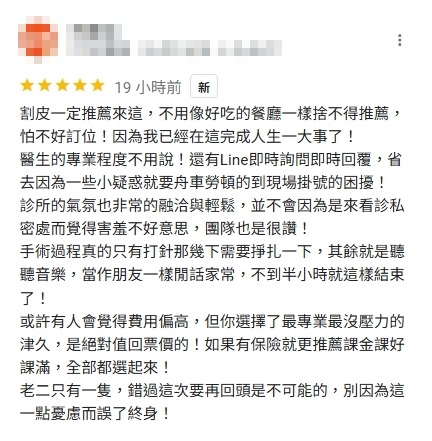
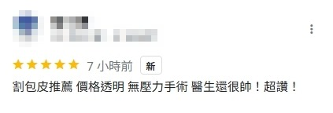
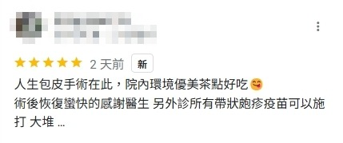
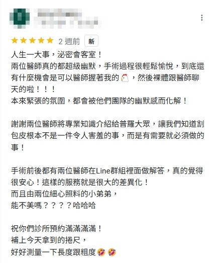
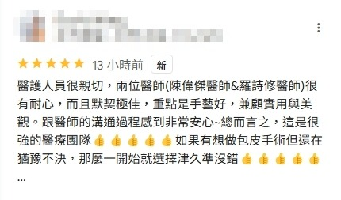
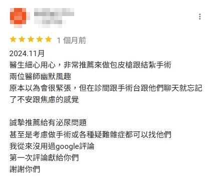
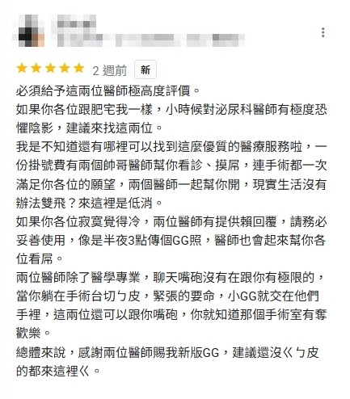
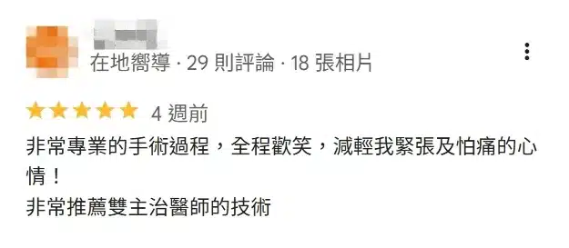
更多評論，歡迎到津久診所 Google map 和皮友分享查閱！
台北割包皮推薦！專業雙主治醫師為你把關
泌密會客室 - 陳偉傑醫師 X 羅詩修醫師
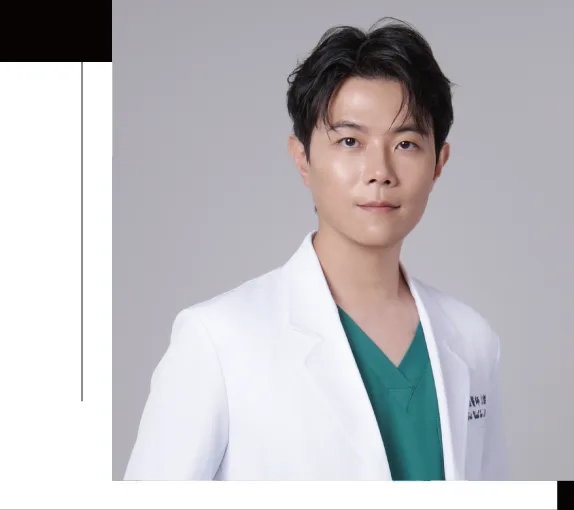
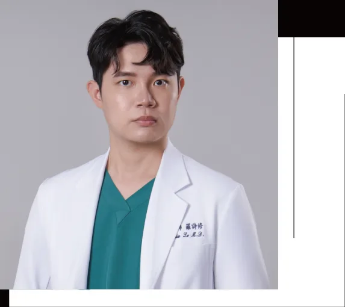
-常見問題-
Q1. 割包皮手術後的恢復時間大約多久？
大部分的患者在術後隔天都能正常上學、上班。若您是較需要走動、搬重物、流汗的工作，則建議需要休息數天後再返回職場。Q2. 雙主治包皮槍 5.0 有健保給付嗎？還是要自費？
包皮槍屬於自費耗材，健保並沒有給付。Q3. 割包皮手術到底會不會痛？
手術前會先替您打局部麻醉針，入針當下難免會感到一定程度的不適（相對於牙醫使用麻醉針打牙齦來說，更不痛一些），但手術過程絕對不會痛。Q4. 哪些人進行割包皮手術需要注意？
若您的龜頭或包皮有嚴重發炎現象，我們會在初次門診時先開抗生素控制，待發炎情況控制下來之後再進行手術。 若您是體重過重、血糖控制較差、糖化血色素較高者，或患有糖尿病，我們建議需先減重或將血糖控制好之後再進行手術。因為割包皮並不只是手術當下的事，我們更在意您術後的恢復情況，為了良好的恢復我們需要進行全面的評估才可以為您施做。 若您有以上情況卻又想割包皮，可以先加入我們的官方 Line ，由雙主治醫師親自為您初步評估是否適合手術後再安排手術。Q5. 割包皮手術可以舒眠麻醉嗎？
可以。不過，若您對手術不會感到恐懼，我們會建議局部麻醉即可。- 局部麻醉會讓患者在清醒的狀態下進行手術，醫師們會在手術前於患部施打麻醉藥品，讓患部都沒感覺後才真正開始進行手術。
- 舒眠麻醉則是先使用靜脈注射的方式讓病患睡著，睡著之後才會在患部施打局部麻醉藥品。→所以兩者差別僅是患者在「清醒」或是「睡著」的狀態下施打局部麻醉藥品
Q6. 割包皮術後要怎麼照顧傷口？割包皮手術完可以洗澡嗎？
術後我們會提供包紮換藥的影片供您參考，也會在術後提供所需的藥品和「泌尿科護理包」讓您方便自行換藥。 術後前 7 天請擦澡，之後只要能讓患處碰不到水（可使用保鮮膜包覆患處）即可洗澡。Q7. 割包皮術後要回診幾次？
原則上會有 3 次。第一次為術後第 2 天，第二次為術後第 9 天，第三次為術後 1 個月左右。為了持續追蹤傷口癒合情況與割包皮手術後整體狀況，我們強烈建議盡量都回診，交由雙主治醫師替您親自檢查。 若您人在外縣市或國外，又或者有其他因素或考量使您無法回診的話，也可以透過 Line 在線上跟我們兩位醫師進行割包皮手術後的狀況確認，以省去您舟車勞頓的時間。Q8. 割包皮術後當天可以騎機車或開車回家嗎？
我們建議在割包皮手術當天，儘量坐大眾交通工具或計程車往返診所。 如果您選擇騎車前往津久診所，只要不是太長途（約30分鐘以內）的路程，或者路途無顛簸、較平順，不需太擔心術後影響傷口疼痛的話可自行斟酌。 若您平常有騎車的需求的話，在手術隔天即可開始騎機車。 另外，如果您是當天是採「舒眠麻醉」進行割包皮手術的話，術後絕對不能自行駕駛交通工具離開診所。為了您的安全，務必搭乘大眾交通工具或者叫車、請親友接送，總之絕對不建議您自己開車或騎車往返！Q9. 割包皮術後多久可以運動？
建議在術後一個月內都不要做會摩擦到小兄弟的激烈運動（如：慢跑、籃球等），若是不太會有摩擦的運動（如：負重深蹲）則可在傷口癒合良好的前提下開始運動。Q10. 手術後，傷口上的釘子大概多久會掉？
只要好好照顧傷口，平均在 3 - 4 周釘子就會全數自然脫落。若滿 4 周後釘子還沒掉光，可回診由雙主治醫師替您溫柔處理。Q11. 手術後，多久可以重啟性生活？
建議待傷口恢復完全，滿 1 個月之後再開機。Q12. 我從外縣市／離島／海外來，想要看完診就直接割包皮，津久診所可以當天看診後就直接進行割包皮手術嗎？
可以。津久診所提供當日看診、當日手術的「快速通關」服務。不只割包皮，結紮、燒菜花、珍珠丘疹去除手術等皆可使用「快速通關」服務。請透過官方 Line 向我們提前預約。Q13. 我不想割到剛好，想保留一點包皮可以嗎？
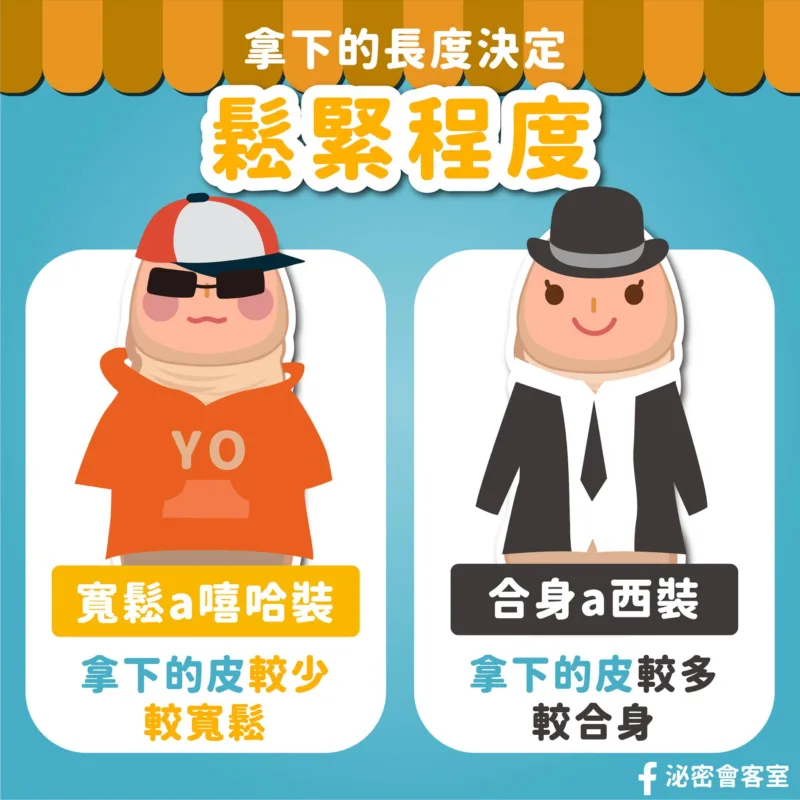
擔心割完太鬆或太緊？雙主治醫師會依照您的需求和適合度替您量身打造您想要的鬆緊度。不用擔心您的皮會不合身！但請記得在手術前務必向醫師說明清楚您的需求。Q14. 割完會有色差嗎？
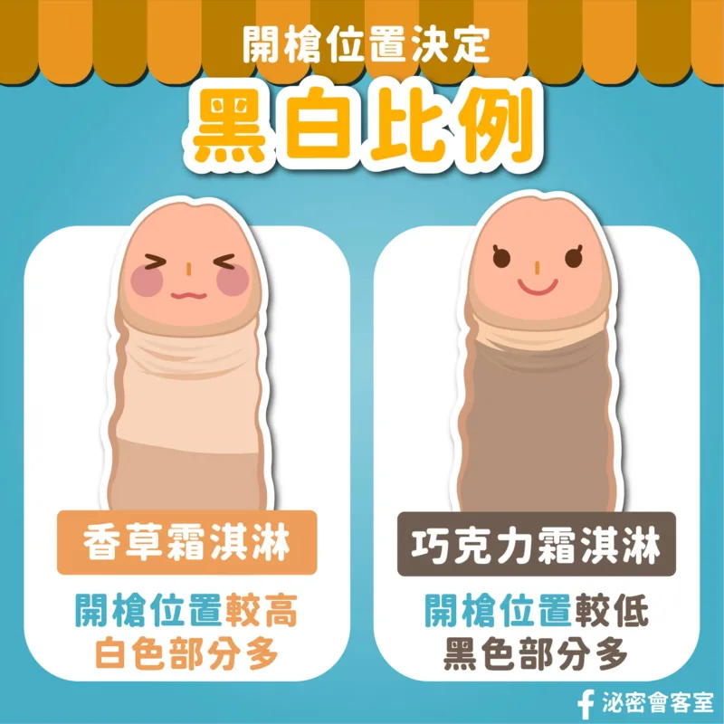
許多人會擔心在割包皮手術之後會有明顯色差。 有色差的原因是因為原本小兄弟的包皮顏色本來就會因為各種因素導致有區域深淺不一的外觀，再加上手術醫師沒有依照求診者的需求手術，才會導致割完之後有明顯色差。 津久診所x泌密會客室可以依照您的需求為您量身打造客製化GG，不用擔心會有明顯色差！但請記得在手術前務必向醫師說明清楚您的需求。Q15. 平常有服用抗凝血藥物的話，可以割包皮嗎？
建議在割包皮手術前先暫停使用抗凝血藥物一段時間。若割包皮手術之前需要使用相關藥物，請務必事先告知醫師，我們會替您進行評估。Q16. 割包皮可以跟結紮一起做嗎？
可以。若您還有其他想要處理的問題（如：燒菜花、珍珠丘疹去除、龜頭增大/減敏等）想要一併處理，經過雙主治醫師評估後都可以一併執行。請透過官方 Line 向我們事先討論。-注意事項-
術前須知
1.選擇全身麻醉者，若手部有美甲，術前需至少卸除一支指甲，以利進行血氧判斷。 2.請事先告知疾病史、用藥史、手術治療經驗、家族疾病史、過敏史。 3.服用抗凝血劑，如：阿斯匹靈、維他命 E、可邁丁(Warfarin)等，請先與醫師告知，手術前先暫停 1 週。 4.若長期服用活血健康保健食品，如：銀杏、葡萄籽、紅麴、人蔘，術後請先暫停 2 週。術後須知
1.術後 2-3 天別拆紗布直到初次回診。若有出血，請私訊醫師，按照醫師指示處理。 2.請配合醫囑按時服藥、回診前請勿弄濕紗布及傷口處（如需沐浴請以擦澡方式），若有異常狀況請私訊醫師。 3.因手術過後會有較緊的紗布包裹傷口，會有排尿較為困難、分岔等情況是正常現象，可採坐姿排尿降低尿液四散情形。 4.因手術後仍會有些微微血管出血，有部分瘀青狀況為正常現象。若有疑慮可私訊醫師照片詢問。 5.術後約 1-2 週後會陸續脫釘，脫釘與傷口癒合速度與個人體質有關，若時間過長請回診找醫師評估。 6.術後 1 個月內避免煙、酒、熬夜、激烈運動。 7.術後 1 個月才可進行性行為。生活作息與清潔
1.睡前減少喝水，減少夜間勃起時引起的傷口疼痛。 2.傷口早、晚需以棉棒及生理食鹽水清潔，傷口處以紗布包覆，保持清潔乾燥。 3.體溫超過 38.5 ℃以上、噁心嘔吐、傷口出血不止，請與醫師聯絡。-醫師服務地點-
原頁地圖保留；本地預覽不載入外部地圖。